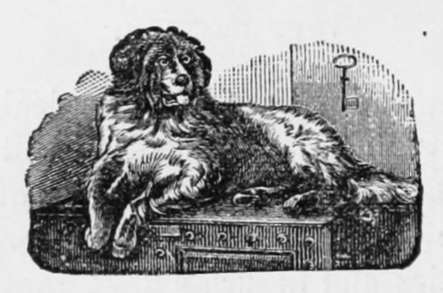

The Dog
Description
This section is from the book "Breeding, Training, Management, Diseases Of Dogs", by Francis Butler. Also available from Amazon: Breeding, training, management, diseases.
The Dog
The Dog appears to be a native of every cli mate : in the frigid regions of the North, under the burning sun of the Tropics, or in the more temperate climes , he is to be found the faithful associate, guardian and friend of man ; whilst, if we are to believe what everybody says, the most sagacious, knowing, tractable, learned and faithful, are common in every part of the habitable globe. From the mammoth St. Bernard, down to the darling, dear, tiny, little lap-dog, no matter what breed, what cross, what size, what color, or what his peculiar properties or propensities, the favorite is considered by his owner, as knowing far more than the majority of other breeds. The St. Bernard has rendered himself famous, by his charitable feats in re lieving snow-bound travellers ; the Newfound land by saving human beings from drowning ; the Poodle by his aptness in acquiring a host of amusing tricks and antics ; the Sporting Dog, by his services in the field, contributing both to the pleasure and profit of his master; the pet, (whatever may be his pedigree), for his almost incredible foresight, judgment, discretion, attention, cleanliness, etc, in line, to hear some people speak of their pets, one might be led to believe their dogs learned enough to instruct the whole family. I am only endeavoring to show by this, tint the society of man, together with education and the force of habit, produce about the same effects on one breed as on the other. I am often asked which kind is the most easy to teach, and I am certainly unable to give any satisfactory answer. Whilst almost every breed of dog has its peculiar characteristics, and is more apt at one branch of tuition than another, still, as a whole, I can scarcely admit that the honorable member from Newfoundland, or the noble representative of St. Bernard, is more capable of instruction than the learned Poodle from Paris, or the thirsty Bloodhound of Cuba. By habits, education, good society and good management, they will all excel in their varied spheres, and will all be considered, (as no doubt they are), the most wonderful animals in the world. A large handsome dog, or an elegant pet, is generally observed to be the most tractable, and gentlemanly animal. He receives a lesson at every step, his master or mistress is proud of him, he accompanies them around the house, and oft-times in their travels ; he must be introduced to a large circle of acquaintances, who are called on to witness his performances, and testify to his merit. The pretty, little dog, in the house knows the varied habits and movements of the inmates, the hour to rise, and the hour of retirement ; breakfast, dinner and tea are seasons with which he is perfectly familiar ; in fact, he appears to understand a hundred things he never was taught ; whilst the poor beast of a watch-dog, at the end of his four foot chain, is justly accused of being one of the most untraceable, illiterate brutes in creation. Society, habit and example are the sole causes of this difference. Had the pet been on the chain, and the forlorn watch-dog inside, the reverse would have been the case.
Some date the origin of the Dog to the Wolf, but as there is a wide difference both in their physical construction and intellectual capabilities, there is no foundation for such an insupportable theory. No a dog is a dog, always has been, and ever will be. He differs widely in many respects from any other quadruped, surpassing them all in sagacity, intellectuality and fidelity. The elephant, the horse, the cow, the monkey, and others may portray evident symptoms of instinctive reasoning, but the dog will absorb more instruction in one short hour, than the whole phalanx could digest in a week. He will learn where no lesson is given, and from knowledge thus acquired, he is fully competent to act as the tutor of others. With his wonderful performances, and disinterested fidelity, the whole world appear to be conver sant. A recapitulation of his varied feats would be a somewhat useless devotion of space, whilst to pass them over in utter silence, would be unjust in one, who is proud to acknowledge him his trustworthy friend. In various parts of the world, I have traced the peculiar characteristics of the canine race, and have found that they stand everywhere ore-eminent above all other animals in their astonishing powers of mental development—their disinterested fidelity and attachment to man. Under chastisement, neglect and starvation, they are still devoted to their master's will, and ready to perish by his side, rather than forsake him ; his companion by day, and his guard by night; the author of his sports, the sharer of his toils, and ever in waiting to obey his commands. With all these qualifications, it must not be forgotten, that great talents either uncultivated or misdirected, may be, and often are, turned to very bad account. For this simple reason, " Dog" is a bye-word among all nations, because, travel where you may, thousands of these poor brutes are either left to the tender mercies of unrestricted loaferdom, (consequently they are accused of transgressing laws which they were never taught to obey), or even with respectable owners in the majority of cases, they get no kind of instruction whatever ; it being generally considered an all sufficient virtue, should they happily succeed in waking up the family, two or three times in the night. If a dog should, however, chance to break loose, kill a dozen chickens, four ducks and a sheep, steal half a leg of mutton, and worry the cat, tear up the flower-beds, or play havoc with the clothes-line, ten to one but the general opinioc is, that he ought to be shot or got rid of immediately. Now I contend that he has done no more than might have been expected, even from an uncivilized biped. It was nothing more than a perfectly natural impulse unrestrained. If we show a rat to a terrier, and he refuse to seize him, we set him down as a cowardly beast ; but we can either urge him to kill him, or teach him to respect him. Be may not require excitement, but at any rate, he may be easily restrained. The greatest rat killer I ever owned, or ever saw, was my Bull-terrier dog Tiger, (whose Life and Adventures, lately published, may be worth the perusal of all admirers of canine character). I could leave him in a room shut up with half a dozen rats, running around him, and had I told him not to touch them, they were perfectly safe in his keeping ; but at a word, and in a few seconds he would annihilate them all. Were he ever so hungry, he would hold meat in his mouth, till I bid him swallow it; he would obey a multitude of commands, given in a whisper : yea. a variety of so called remarkable things could old Tiger do. Now, I am not aware that he was born with talents superior to his fellows, neither did he belong to a race the most renowned for their intellectuality, but he had his advantages. He was seldom out of my sight or hearing, and his progress afforded us mutual pleasure and satisfaction. During the seventeen years of his life, I seldom had any occasion to correct him with stripes; he knew the expression of my countenance, and the sound of my voice too well to require it. So accustomed was I to the different intonations of his bark, that to me, it was nothing short of absolute speech. I repeat, I do not quote him as being naturally more gifted than his fellows, (although there is an equally marked difference of capacity in dogs as well as in men), since I have had many who profited equally, according to their advantages. I merely introduce his respected memory, to prove to a demonstration that dogs are really worthy of respectful consideration, and will amply repay any reasonable trouble that may be bestowed on them ; whilst on the other hand, he who would deny his guardian the privilege of a common school education, should be called to account for his shortsighted, and cruel neglect.
Continue to:
- prev: Introduction
- Table of Contents
- next: Saint Bernard Dog